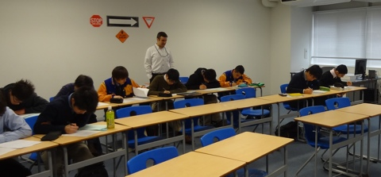

IB Mathematics SL
Course Description
This course is very demanding and suitable only for capable and enthusiastic math students. The main areas of study are in Algebra, Functions and equations, Circular Functions and Trigonometry, Vectors, Statistics and Probability, and Calculus.
In year one, students study Algebra, Function and equations, Circular Functions and Trigonometry and Vectors. Additionally, they do a practice 'Mathematical Exploration'.
In year two, students study Calculus, Statistics and Probability and do their Mathematical Exploration while keeping a lot of time for the review for the final IB examination.
Assessment
The final grade in this course will comprise a variety of assessments, including homework, quizzes, tests and projects.
Homework Expectations
- Work assigned during class time is expected to be completed before the next lesson.
- Plan for at least 30min - 45min to complete class work each night.
- Homework is expected to be completed before class time (It is important that you complete the assignments so you can ask questions that you may have).
- Late work will be accepted with one full grade deduction (10%) for each day it is late up to a maximum of three days.
Resources
- Mathematics for the international student (Haese & Harris)
- TI-83 of TI-84 Graphical Display Calculator
- Two Notebooks strictly for mathematics to be provided by students
- Pencils and blue or black pen
Other Information
Absences
It is the student's responsibility to ask for the work that has been missed. The work that was due on the day of absence is expected to be completed. One day's makeup period will be given for each day absent.
Expectations
Be Respectful; Be Positive; Be Involved; Check your Moodle account regularly.